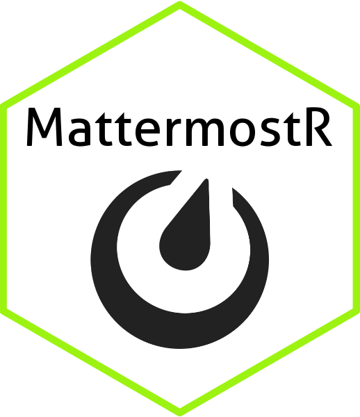

MattermostR 
MattermostR
MattermostR is an R package designed to interact with the Mattermost API for sending messages, managing channels, uploading files, and more. The package includes functionality for automating interactions with Mattermost from R scripts, allowing you to easily send messages, upload attachments, and manage teams and channels.
Installation
You can install the MattermostR package from GitHub:
# Install the devtools package if you don't have it already
install.packages("devtools")
# Install MattermostR
devtools::install_github("GreenGrassBlueOcean/MattermostR")Features
1. Send Messages with Priority
Send messages to Mattermost channels with optional priorities: - Normal - High - Low
The priority is automatically normalized in the send_mattermost_message() function, so you don’t need to worry about case sensitivity (e.g., high, HIGH, and High are all valid).
2. Attach Files to Messages
You can attach files to your messages by specifying a file path. The file is first uploaded to the Mattermost server, and its file ID is included in the message.
Example:
response <- send_mattermost_message(
channel_id = channel_id,
message = "Here is your file!",
file_path = "output.txt",
verbose = TRUE
)3. Manage Teams and Channels
The package provides tools for managing channels and teams:
1.List Channels and Groups: Retrieve all channels and groups from a team.
2.Create Channels: Programmatically create new channels in a team.
3.Delete Channels: Delete existing channels.
4.Look Up Channels by Name: Find a specific channel by name and get its ID.
4. Authentication
Authenticate with the Mattermost API using a bearer token or by providing your username and password. Once authenticated, the token is stored for future API calls.
auth <- authenticate_mattermost(
base_url = "https://yourmattermost.stackhero-network.com",
token = "your-token"
)5. Error Handling and Validation
Priority Validation: Before sending a message, the priority is validated to ensure that it’s one of Normal, High, or Low. If an invalid priority is provided, the function will return an error. Input Validation: Ensures that required fields (such as channel_id and message) are provided before making API calls.
Usage
Sending a Message
# Authenticate
auth <- authenticate_mattermost(base_url = "https://yourmattermost.stackhero-network.com", token = "your-token")
# Send a message to a channel
response <- send_mattermost_message(
channel_id = "your-channel-id",
message = "Hello, Mattermost!",
priority = "High",
verbose = TRUE
)Sending a Message with a File
# Send a message with a file attachment
response <- send_mattermost_message(
channel_id = "your-channel-id",
message = "Here is a file attachment",
file_path = "path/to/file.txt",
verbose = TRUE
)Managing Channels
# List all channels in a team
channels <- get_team_channels(team_id = "your-team-id")
# Create a new channel
create_mattermost_channel(team_id = "your-team-id", channel_name = "new-channel", channel_display_name = "New Channel")
# Delete a channel
delete_mattermost_channel(channel_id = "your-channel-id")